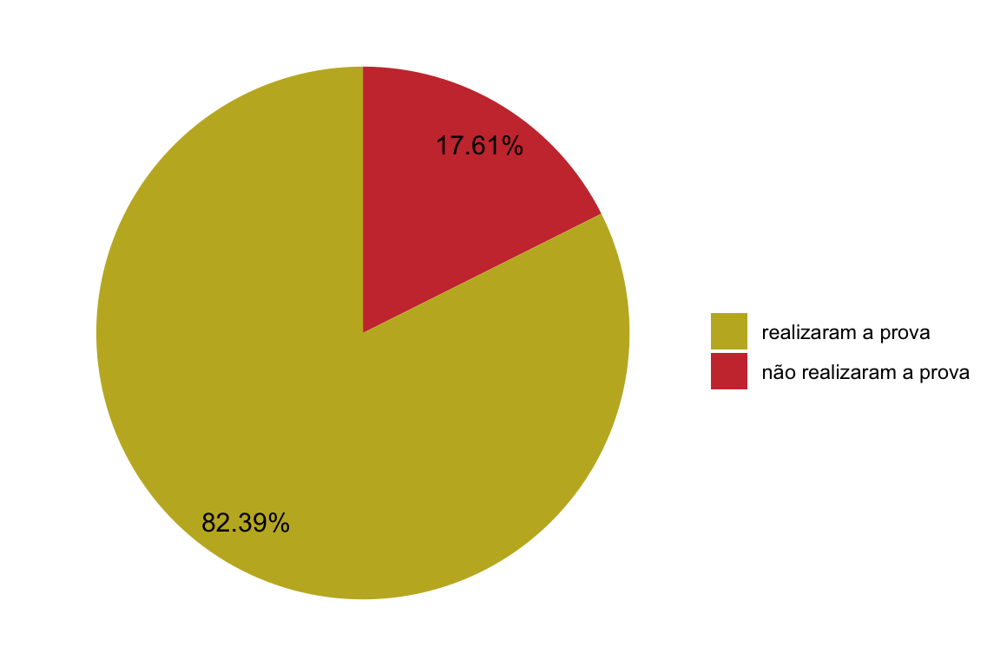

Aproveite os dados desse portal e traga seus comentários para ampliarmos ainda mais a relevância do mesmo.
Seja bem-vindo(a)!
Navegue na página clicando nos links ou rolando a tela do seu computador/celular.
O gráfico abaixo apresenta um comparativo entre estudantes do 7º ano presentes e ausentes no Avaliar para Conhecer 2023:

Na sequência, apresenta-se uma tabela comparativa com todos os dados relacionados à presença e ausência dos estudantes do 7º ano da escola e dos estudantes do 7º ano da Rede:
Ano | Total de estudantes | Nº de Presentes | Presença |
|---|---|---|---|
7º Escola | 159 | 131 | 82.4% |
7º Rede | 1 543 | 1 197 | 77.6% |
* Os números registrados na coluna “Total de estudantes” estão de acordo com as informações do Sistema NORTUS, coletados em 14/02/2023. | |||
A análise proposta na sequência se refere aos percentuais de acertos dos estudantes da escola e da Rede em cada Indicador de Aprendizagem avaliado. Espera-se que tais resultados possibilitem um entendimento mais específico dos conteúdos abordados na prova e os resultados alcançados pelos estudantes do 7º ano em relação a cada habilidade trabalhada.
Questões | IA | Descrição | Acertos Escola | Acertos Rede |
|---|---|---|---|---|
LP1 | IA15 | Interpretar texto com auxílio de material gráfico diverso | 74.8% | 77.9% |
LP2 | IA24 | Reconhecer o efeito de sentido decorrente do uso de determinada pontuação ou de outras notações em um texto | 56.5% | 53.6% |
LP3 | IA16 | Relacionar as contribuições da linguagem verbal com a da não verbal para a construção de sentidos de um texto | 61.8% | 51.5% |
LP4 | IA20 | Diferenciar as ideias principais e secundárias em um texto, articulando-as às informações textuais e aos conhecimentos prévios acionados no processo interpretativo | 24.4% | 25.1% |
LP5 | IA21 | Identificar o conflito gerador e os elementos que constroem a narrativa | 27.5% | 25.1% |
LP6 | IA23 | Identificar efeitos de ironia ou humor em um texto | 45.0% | 38.7% |
LP7 | IA17 | Identificar o propósito comunicativo de textos de diferentes gêneros | 80.9% | 71.6% |
LP8 | IA15 | Interpretar texto com auxílio de material gráfico diverso | 79.4% | 79.5% |
LP9 | IA22 | Estabelecer relação de causa e consequência | 21.4% | 28.8% |
LP10 | IA20 | Diferenciar as ideias principais e secundárias em um texto, articulando-as às informações textuais e aos conhecimentos prévios acionados no processo interpretativo | 36.6% | 30.2% |
LP11 | IA12 | Inferir o tema de um texto | 54.2% | 47.6% |
LP12 | IA15 | Interpretar texto com auxílio de material gráfico diverso | 87.8% | 81.5% |
LP13 | IA23 | Identificar efeitos de ironia ou humor em um texto | 16.0% | 17.2% |
LP14 | IA25 | Reconhecer o efeito de sentido decorrente do uso de palavra ou expressão | 20.6% | 24.3% |
LP15 | IA14 | Inferir o sentido de uma palavra ou expressão em função do contexto | 33.6% | 32.9% |
LP16 | IA18 | Reconhecer diferentes formas de tratar uma informação na comparação de textos que tratam do mesmo tema, em função das condições em que ele foi produzido e daquelas em que será recebido | 85.5% | 83.3% |
LP17 | IA13 | Inferir uma informação implícita em um texto | 44.3% | 44.3% |
LP18 | IA19 | Identificar as repetições ou substituições que contribuem para a noção de continuidade/progressão textual | 21.4% | 25.5% |
Questões | IA | Descrição | Acertos Escola | Acertos Rede |
|---|---|---|---|---|
M1 | IA20 | Realizar estimativas e resolver situações-problema que abordem grandezas e medidas de tempo, massa e distância | 84.0% | 72.8% |
M2 | IA14 | Resolver problemas envolvendo moedas e cédulas do nosso sistema monetário | 84.0% | 82.6% |
M3 | IA14 | Resolver problemas envolvendo moedas e cédulas do nosso sistema monetário | 48.9% | 47.3% |
M4 | IA17 | Reconhecer a planificação de um sólido simples (serão utilizados o cubo, o paralelepípedo e o cone) ou vice versa (reconhecer o sólido a partir da planificação) | 79.4% | 70.5% |
M5 | IA19 | Resolver problema envolvendo perímetro ou área de figuras poligonais dadas sobre malhas quadriculadas, nas quais os lados coincidem com as linhas de grade da malha | 60.3% | 56.1% |
M6 | IA13 | Resolver problemas envolvendo os conceitos de porcentagem (10%, 25%, 50%, 75%, 100%) | 65.6% | 56.5% |
M7 | IA11 | Compreender conceitos e significados das operações entre números racionais ou utilizar operações entre números racionais na resolução de situações-problema | 10.7% | 10.3% |
M8 | IA18 | Identificar a localização e movimentação de objetos em mapas, croquis e outras representações gráficas | 22.1% | 17.7% |
M9 | IA11 | Compreender conceitos e significados das operações entre números racionais ou utilizar operações entre números racionais na resolução de situações-problema | 27.5% | 28.3% |
M10 | IA12 | Localizar números racionais na reta numérica | 47.3% | 42.5% |
M11 | IA19 | Resolver problema envolvendo perímetro ou área de figuras poligonais dadas sobre malhas quadriculadas, nas quais os lados coincidem com as linhas de grade da malha | 35.1% | 39.4% |
M12 | IA15 | Ler dados em tabelas, gráficos de colunas ou gráficos de setor circular | 57.3% | 51.7% |
M13 | IA11 | Compreender conceitos e significados das operações entre números racionais ou utilizar operações entre números racionais na resolução de situações-problema | 45.8% | 38.2% |
M14 | IA13 | Resolver problemas envolvendo os conceitos de porcentagem (10%, 25%, 50%, 75%, 100%) | 14.5% | 12.9% |
M15 | IA16 | Interpretar ou comparar dados fornecidos em tabelas, gráficos de coluna, ou de setor circular, em contexto social, cultural, familiar, escolar dos alunos | 37.4% | 38.4% |
M16 | IA12 | Localizar números racionais na reta numérica | 34.4% | 34.8% |
M17 | IA20 | Realizar estimativas e resolver situações-problema que abordem grandezas e medidas de tempo, massa e distância | 37.4% | 24.1% |
M18 | IA17 | Reconhecer a planificação de um sólido simples (serão utilizados o cubo, o paralelepípedo e o cone) ou vice versa (reconhecer o sólido a partir da planificação) | 66.4% | 56.8% |
A análise a seguir apresenta os percentuais de acertos dos estudantes da escola e da Rede em cada Grupo de Indicadores de Aprendizagem. Espera-se que tais resultados possibilitem uma análise mais ampla da avaliação. Os Grupos de Indicadores foram criados considerando um conjunto de habilidades avaliadas que se referem a determinado aspecto dos conteúdos abordados. Assim, em Língua Portuguesa chegou-se a cinco linhas de análise para cobertura dos conteúdos abordados: I) Procedimentos de Leitura, II) Implicações do Suporte, do Gênero e/ou do Enunciador na Compreensão do Texto, III) Relação entre Textos, IV) Coerência e Coesão no Processamento do Texto, V) Relações entre Recursos Expressivos e Efeitos de Sentido. Já em Matemática, os conteúdos foram agrupados em quatro linhas de análise, a saber: I) Números e Operações/Álgebra e Funções, II) Tratamento da Informação, III) Espaço e Forma, IV) Grandezas e Medidas. Espera-se que tais resultados permitam identificar áreas dos conteúdos que precisam ser reforçadas e contribuam para o (re)planejamento de ações pedagógicas na U.E.
GRUPO | Descrição | Acertos Escola | Acertos Rede |
|---|---|---|---|
I | Procedimentos de Leitura | 44.0% | 41.6% |
II | Implicações do Suporte, do Gênero e/ou do Enunciador na Compreensão do Texto | 76.9% | 72.4% |
III | Relação entre Textos | 85.5% | 83.3% |
IV | Coerência e Coesão no Processamento do Texto | 26.3% | 26.9% |
V | Relações entre Recursos Expressivos e Efeitos de Sentido | 34.5% | 33.4% |
GRUPO | Descrição | Acertos Escola | Acertos Rede |
|---|---|---|---|
I | Números e Operações/Álgebra e Funções | 42.1% | 39.3% |
II | Tratamento da Informação | 47.3% | 45.1% |
III | Espaço e Forma | 56.0% | 48.3% |
IV | Grandezas e Medidas | 54.2% | 48.1% |
O gráfico abaixo apresenta um comparativo entre estudantes do 9º ano presentes e ausentes no Avaliar para Conhecer 2023:
Na sequência, apresenta-se uma tabela comparativa com todos os dados relacionados à presença e ausência dos estudantes do 9º ano da escola e dos estudantes do 9º ano da Rede:
Ano | Total de estudantes | Nº de Presentes | Presença |
|---|---|---|---|
9º Escola | 144 | 119 | 82.6% |
9º Rede | 1 118 | 885 | 79.2% |
* Os números registrados na coluna “Total de estudantes” estão de acordo com as informações do Sistema NORTUS, coletados em 14/02/2023. | |||
A análise proposta na sequência se refere aos percentuais de acertos dos estudantes da escola e da Rede em cada Indicador de Aprendizagem avaliado. Espera-se que tais resultados possibilitem um entendimento mais específico dos conteúdos abordados na prova e os resultados alcançados pelos estudantes do 9º ano em relação a cada habilidade trabalhada.
Questões | IA | Descrição | Acertos Escola | Acertos Rede |
|---|---|---|---|---|
LP1 | IA30 | Identificar a influência de um material gráfico auxiliar para interpretação de um determinado texto | 69.7% | 68.8% |
LP2 | IA29 | Inferir o sentido de uma palavra ou expressão em função do contexto | 71.4% | 70.6% |
LP3 | IA27 | Distinguir fato e opinião | 61.3% | 55.9% |
LP4 | IA31 | Relacionar as contribuições da linguagem verbal com a da não verbal para a construção de sentidos de um texto | 54.6% | 52.8% |
LP5 | IA38 | Identificar efeitos de ironia ou humor em um dado texto | 49.6% | 49.9% |
LP6 | IA29 | Inferir o sentido de uma palavra ou expressão em função do contexto | 70.6% | 69.9% |
LP7 | IA36 | Estabelecer relações lógico-discursivas presentes no texto, marcadas por conjunções, advérbios etc. | 24.4% | 22.9% |
LP8 | IA28 | Inferir uma informação implícita em um texto | 25.2% | 22.0% |
LP9 | IA34 | Identificar o conflito gerador do enredo e os elementos que constroem a narrativa | 50.4% | 38.9% |
LP10 | IA28 | Inferir uma informação implícita em um texto | 68.1% | 75.6% |
LP11 | IA35 | Estabelecer relação de causa/consequência entre partes, elementos ou ideias de um texto | 55.5% | 54.6% |
LP12 | IA29 | Inferir o sentido de uma palavra ou expressão em função do contexto | 47.1% | 50.7% |
LP13 | IA26 | Inferir o tema de um texto | 60.5% | 55.4% |
LP14 | IA32 | Comparar o propósito comunicativo de dois textos de gêneros diferentes, mas de mesmo tema | 66.4% | 59.4% |
LP15 | IA36 | Estabelecer relações lógico-discursivas presentes no texto, marcadas por conjunções, advérbios etc. | 63.9% | 61.6% |
LP16 | IA37 | Diferenciar as ideias principais e secundárias em um texto | 48.7% | 43.3% |
LP17 | IA39 | Reconhecer o efeito de sentido decorrente do uso de determinada pontuação ou de outras notações em um texto | 37.0% | 34.8% |
LP18 | IA33 | Estabelecer relações entre partes de um texto, identificando repetições ou substituições que contribuem para a continuidade de um texto | 64.7% | 68.1% |
Questões | IA | Descrição | Acertos Escola | Acertos Rede |
|---|---|---|---|---|
M1 | IA21 | Compreender conceitos e significados das operações entre números racionais ou utilizar operações entre números reais na resolução de situações-problema | 23.5% | 25.9% |
M2 | IA21 | Compreender conceitos e significados das operações entre números racionais ou utilizar operações entre números reais na resolução de situações-problema | 38.7% | 41.7% |
M3 | IA22 | Resolver problemas envolvendo os conceitos de porcentagem, regra de três simples e razão e proporção | 54.6% | 50.8% |
M4 | IA23 | Inferir padrão de evolução dos termos de uma sequência envolvendo representações pictóricas (figuras), números, etc., e/ou identificar expressão algébrica que o representa | 40.3% | 38.2% |
M5 | IA30 | Realizar estimativas e resolver problemas que abordem grandezas e medidas: tempo, massa, distância e volume | 19.3% | 17.7% |
M6 | IA26 | Relacionar objetos tridimensionais às suas representações bidimensionais ou vice-versa (abordar prismas, pirâmides, cilindros, cones ou outros objetos que não são sólidos) | 31.9% | 31.2% |
M7 | IA29 | Compreender o significado das principais medidas de perímetro e área utilizadas cotidianamente e resolver problemas que envolvem figuras planas e suas propriedades (quadrado, retângulo, triângulo, losango e círculo) | 28.6% | 22.8% |
M8 | IA23 | Inferir padrão de evolução dos termos de uma sequência envolvendo representações pictóricas (figuras), números, etc., e/ou identificar expressão algébrica que o representa | 31.9% | 30.8% |
M9 | IA29 | Compreender o significado das principais medidas de perímetro e área utilizadas cotidianamente e resolver problemas que envolvem figuras planas e suas propriedades (quadrado, retângulo, triângulo, losango e círculo) | 21.0% | 18.9% |
M10 | IA28 | Determinar as coordenadas de um ponto dado em um plano cartesiano, com o apoio de malha quadriculada | 39.5% | 40.9% |
M11 | IA25 | Interpretar ou comparar dados fornecidos em tabelas, gráficos de coluna ou de setor circular, em contexto social, cultural, familiar, escolar dos alunos | 12.6% | 12.1% |
M12 | IA26 | Relacionar objetos tridimensionais às suas representações bidimensionais ou vice-versa (abordar prismas, pirâmides, cilindros, cones ou outros objetos que não são sólidos) | 71.4% | 78.4% |
M13 | IA24 | Ler dados em tabelas, gráficos de colunas ou gráficos de setor circular | 58.0% | 62.6% |
M14 | IA27 | Resolver problemas utilizando as propriedades dos polígonos (soma de seus ângulos internos, número de diagonais, cálculo da medida de cada ângulo interno nos polígonos regulares) | 21.0% | 30.2% |
M15 | IA25 | Interpretar ou comparar dados fornecidos em tabelas, gráficos de coluna ou de setor circular, em contexto social, cultural, familiar, escolar dos alunos | 59.7% | 70.3% |
M16 | IA22 | Resolver problemas envolvendo os conceitos de porcentagem, regra de três simples e razão e proporção | 38.7% | 39.5% |
M17 | IA30 | Realizar estimativas e resolver problemas que abordem grandezas e medidas: tempo, massa, distância e volume | 21.0% | 20.9% |
M18 | IA21 | Compreender conceitos e significados das operações entre números racionais ou utilizar operações entre números reais na resolução de situações-problema | 35.3% | 36.2% |
A análise a seguir apresenta os percentuais de acertos dos estudantes da escola e da Rede em cada Grupo de Indicadores de Aprendizagem. Espera-se que tais resultados possibilitem uma análise mais ampla da avaliação. Os Grupos de Indicadores foram criados considerando um conjunto de habilidades avaliadas que se referem a determinado aspecto dos conteúdos abordados. Assim, em Língua Portuguesa chegou-se a cinco linhas de análise para cobertura dos conteúdos abordados: I) Procedimentos de Leitura, II) Implicações do Suporte, do Gênero e/ou do Enunciador na Compreensão do Texto, III) Relação entre Textos, IV) Coerência e Coesão no Processamento do Texto, V) Relações entre Recursos Expressivos e Efeitos de Sentido. Já em Matemática, os conteúdos foram agrupados em quatro linhas de análise, a saber: I) Números e Operações/Álgebra e Funções, II) Tratamento da Informação, III) Espaço e Forma, IV) Grandezas e Medidas. Espera-se que tais resultados permitam identificar áreas dos conteúdos que precisam ser reforçadas e contribuam para o (re)planejamento de ações pedagógicas na U.E.
GRUPO | Descrição | Acertos Escola | Acertos Rede |
|---|---|---|---|
I | Procedimentos de Leitura | 57.7% | 57.2% |
II | Implicações do Suporte, do Gênero e/ou do Enunciador na Compreensão do Texto | 62.2% | 60.8% |
III | Relação entre Textos | 66.4% | 59.4% |
IV | Coerência e Coesão no Processamento do Texto | 48.6% | 44.2% |
V | Relações entre Recursos Expressivos e Efeitos de Sentido | 43.3% | 42.4% |
GRUPO | Descrição | Acertos Escola | Acertos Rede |
|---|---|---|---|
I | Números e Operações/Álgebra e Funções | 37.6% | 37.6% |
II | Tratamento da Informação | 43.4% | 48.3% |
III | Espaço e Forma | 41.0% | 45.2% |
IV | Grandezas e Medidas | 22.5% | 20.1% |